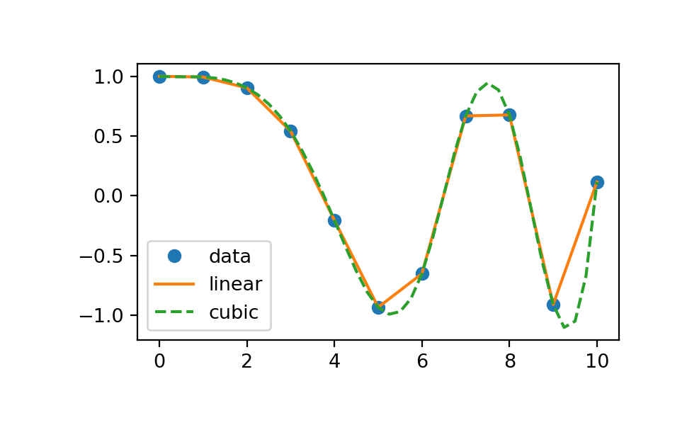
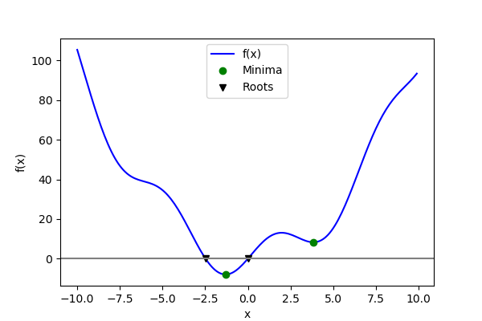

SciPy Selected#
This is an elegant-design introduction to SciPy, geared mainly for new users. You can see more complex recipes at SciPy.
Composition#
SciPy is composed of task-specific sub-modules:
|
Vector quantization / Kmeans |
|
Physical and mathematical constants |
|
Fourier transform |
|
Integration routines |
|
Interpolation |
|
Data input and output |
|
Linear algebra routines |
|
n-dimensional image package |
|
Orthogonal distance regression |
|
Optimization |
|
Signal processing |
|
Sparse matrices |
|
Spatial data structures and algorithms |
|
Any special mathematical functions |
|
Statistics |
The main namespace of SciPy contains original Numpy functions, so we do not import scipy only. Though SciPy is independent from Numpy, the modules depend on Numpy. For more information about Numpy, check out Numpy Guide.
The conventional way of importing Numpy and SciPy modules necessary for illustration is:
In [1]: import numpy as np
In [2]: import scipy.io as sio
In [3]: import scipy.special as special
In [4]: import scipy.integrate as integrate
In [5]: from scipy import stats
In [6]: from scipy import linalg
In [7]: from scipy import optimize
In [8]: from scipy.interpolate import interp1d
Next, we illustrate the common usage of libraries we imported with detailed examples.
IO Management#
Load and save MATLAB files:
In [9]: rng = np.random.default_rng()
In [10]: rand = rng.random(3)
In [11]: rand
Out[11]: array([0.719 , 0.8242, 0.5354])
In [12]: sio.savemat("rand.mat", {"rand" : rand})
In [13]: var = sio.loadmat("rand.mat")
In [14]: var["rand"]
Out[14]: array([[0.719 , 0.8242, 0.5354]])
Warning
Notice MATLAB does not support 1D arrays; the shape of 1D arrays in Numpy and MATLAB are different with (n,) for Numpy and (1, n) for MATLAB by default.
Integration#
In [-]: help(integrate)
Out[-]:
Integrating functions, given function object
============================================
quad -- General purpose integration
quad_vec -- General purpose integration of vector-valued functions
dblquad -- General purpose double integration
tplquad -- General purpose triple integration
nquad -- General purpose N-D integration
fixed_quad -- Integrate func(x) using Gaussian quadrature of order n
quadrature -- Integrate with given tolerance using Gaussian quadrature
romberg -- Integrate func using Romberg integration
quad_explain -- Print information for use of quad
newton_cotes -- Weights and error coefficient for Newton-Cotes integration
IntegrationWarning -- Warning on issues during integration
AccuracyWarning -- Warning on issues during quadrature integration
Integrating functions, given fixed samples
==========================================
trapezoid -- Use trapezoidal rule to compute integral.
cumulative_trapezoid -- Use trapezoidal rule to cumulatively compute integral.
simpson -- Use Simpson's rule to compute integral from samples.
romb -- Use Romberg Integration to compute integral from
-- (2**k + 1) evenly-spaced samples.
Solving initial value problems for ODE systems
==============================================
The solvers are implemented as individual classes, which can be used directly
(low-level usage) or through a convenience function.
solve_ivp -- Convenient function for ODE integration.
RK23 -- Explicit Runge-Kutta solver of order 3(2).
RK45 -- Explicit Runge-Kutta solver of order 5(4).
DOP853 -- Explicit Runge-Kutta solver of order 8.
Radau -- Implicit Runge-Kutta solver of order 5.
BDF -- Implicit multi-step variable order (1 to 5) solver.
LSODA -- LSODA solver from ODEPACK Fortran package.
OdeSolver -- Base class for ODE solvers.
DenseOutput -- Local interpolant for computing a dense output.
OdeSolution -- Class which represents a continuous ODE solution.
Integrate a bessel function jv(3.5,x) using quad along the interval \([0, 4]\)
In [15]: integrate.quad(lambda x: special.jv(3.5 ,x), 0, 4)
Out[15]: (0.4584570300316943, 2.769361245710211e-10)
The return value is a tuple, with the first element holding the estimated value of the integral and the second element holding an upper bound on the error.
Linear algebra#
Calculate determinant and matrix inverse.
In [16]: a = rng.random((3, 3))
In [17]: linalg.det(a)
Out[17]: np.float64(-0.09948043969012788)
In [18]: linalg.inv(a)
Out[18]:
array([[-2.6513, -3.4453, 5.9274],
[-0.0208, 2.9544, -2.9884],
[ 3.0833, 1.593 , -3.1646]])
Interpolation#
Perform linear and cubic interpolation with 1D data.
In [19]: x = np.linspace(0, 10, num=11, endpoint=True)
In [20]: y = np.cos(-x**2/9.0)
In [21]: f1 = interp1d(x, y)
In [22]: f2 = interp1d(x, y, kind='cubic')
In [23]: xnew = np.linspace(0, 10, num=41, endpoint=True)
In [24]: plt.plot(x, y, 'o', xnew, f1(xnew), '-', xnew, f2(xnew), '--')
Out[24]:
[<matplotlib.lines.Line2D at 0x128f0f8c0>,
<matplotlib.lines.Line2D at 0x128f0fa10>,
<matplotlib.lines.Line2D at 0x128f0fb60>]

Root finding#
Finding the roots of a scalar function.
In [25]: def f(x):
....: return x**2 + 10*np.sin(x)
....:
In [26]: root1 = optimize.root(f, x0=1)
In [27]: root1
Out[27]:
message: The solution converged.
success: True
status: 1
fun: [ 0.000e+00]
x: [ 0.000e+00]
method: hybr
nfev: 12
fjac: [[-1.000e+00]]
r: [-1.000e+01]
qtf: [ 1.333e-32]
In [28]: root2 = optimize.root(f, x0=-2.5)
In [29]: (root1.x, root2.x)
Out[29]: (array([0.]), array([-2.4795]))
